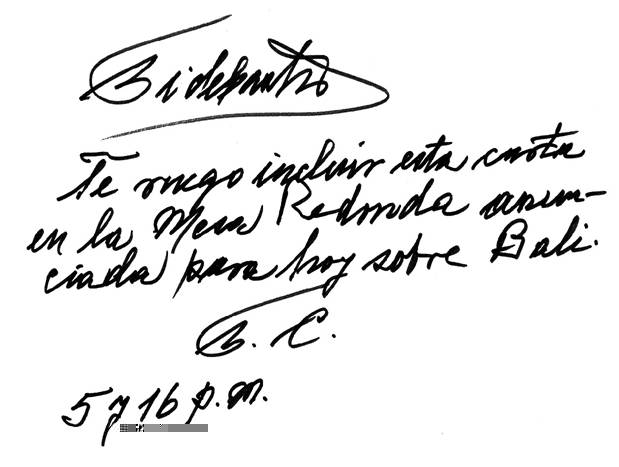

La Habana, 17 de diciembre de
2007
Querido Randy:
Escuché
íntegramente sin perder un solo segundo la Mesa Redonda del jueves 13. Las noticias sobre la Conferencia de Bali,
apuntadas por Rogelio Polanco, director de Juventud Rebelde, confirman la
importancia de los acuerdos internacionales y la necesidad de tomarlos muy en
serio.
En aquella
pequeña isla de Indonesia se reunieron numerosos Jefes de Gobierno de países
del llamado Tercer Mundo, que luchan por su desarrollo y reclaman un trato
equitativo, recursos financieros y transferencias de tecnología a los
representantes de las naciones industrializadas también allí representadas.
El
Secretario General de Naciones Unidas, ante la tenaz obstrucción de Estados
Unidos en el seno de las 190 representaciones allí reunidas, y después de doce
días de negociación, afirmó el viernes 14, hora de Cuba, cuando ya era sábado
en Bali, que la especie humana podía desaparecer como
consecuencia del cambio climático.
Después se marchó hacia Timor Oriental.
Aquella
declaración convirtió la conferencia en una olla de grillos. Al décimo segundo día de estériles esfuerzos
persuasivos, la representante yanqui Paula Dobriansky,
tras un suspiro profundo, declaró: “nos unimos al consenso.” Es obvio que Estados Unidos maniobró para
sortear su aislamiento, aunque no cambió en absoluto las sombrías intenciones
del imperio.
Vino el
gran espectáculo: Canadá y Japón se adhirieron de inmediato a Estados Unidos,
frente al resto de los países que demandaban compromisos serios sobre la emisión
de gases que originan el cambio climático.
Todo se había previsto con antelación entre los aliados de la OTAN y el
poderoso imperio, que en una maniobra de engaño accedió a negociar durante el
año 2008 en Hawai, territorio norteamericano, un nuevo proyecto de convenio,
que sería presentado y aprobado en la Conferencia de Copenhague, Dinamarca, el
año 2009, que sustituiría al de Kyoto, al caducar éste en 2012.
A Europa en
la teatral solución le reservaron el papel de salvadora del mundo. Hablaron Brown, la Merkel y otros líderes de
países europeos pidiendo gratitud internacional. Excelente regalo de Navidad y Año Nuevo. Ninguno de los panegiristas mencionó las
decenas de millones de personas pobres que siguen muriendo de enfermedades y
hambre cada año dadas las complejas realidades
actuales, cual si viviéramos en el mejor de los mundos.
El Grupo de
los 77, que comprende 132 países que luchan por desarrollarse, había logrado
consenso para demandar de los países industrializados una reducción de los gases
que originan el cambio climático, para el año 2020, del 20 al 40% por debajo
del nivel alcanzado en 1990, y del 60 al 70% en el año 2050, lo cual es
técnicamente posible. Demandaban además
la asignación de fondos suficientes para la transferencia de tecnología al
Tercer Mundo.
No olvidar
que esos gases dan lugar a las olas de calor, la desertificación, el
derretimiento de glaciares y el aumento del nivel de los mares, que podrían
cubrir países enteros o gran parte de ellos.
Las naciones industrializadas comparten con Estados Unidos la idea
de convertir los alimentos en combustible para los autos lujosos y otros
derroches de las sociedades de consumo.
Lo que
afirmo quedó demostrado cuando el propio sábado 15 de diciembre se hizo público
a las 10 y 06, hora de Washington, que el Presidente de los Estados Unidos
había solicitado al Senado, y éste había aprobado, 696 mil millones de
dólares para el presupuesto militar del año fiscal 2008, entre ellos 189
mil millones destinados a las guerras de Irak y Afganistán.
Experimenté
un sano orgullo al recordar la forma digna y serena con que respondí las
hirientes propuestas que me hizo en 1998 el entonces primer ministro de Canadá
Jean Chrétien. No albergo ilusiones.
Mi más
profunda convicción es que las respuestas a los problemas actuales de la
sociedad cubana, que posee un promedio educacional cercano a 12 grados, casi un
millón de graduados universitarios y la posibilidad real de estudio para sus
ciudadanos sin discriminación alguna, requieren más variantes de respuesta para
cada problema concreto que las contenidas en un tablero de ajedrez. Ni un solo detalle se puede ignorar, y no se
trata de un camino fácil, si es que la inteligencia del ser humano en una
sociedad revolucionaria ha de prevalecer sobre sus instintos.
Mi deber
elemental no es aferrarme a cargos, ni mucho menos obstruir el paso a personas
más jóvenes, sino aportar experiencias e ideas cuyo modesto valor proviene de
la época excepcional que me tocó vivir.
Pienso como
Niemeyer que hay que ser consecuente hasta el final.
